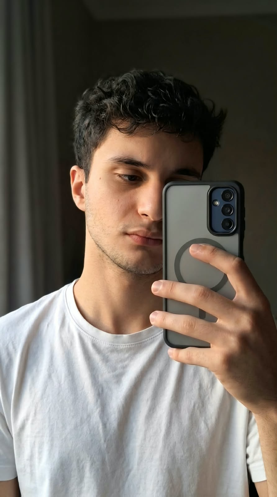

O que estou lendo, ouvindo e assistindo, com resenhas curtas e sinceras. Seu próximo livro pode estar aqui.
Passo o dia entre dados e números. Nos livros encontro o resto: gente, histórias e perguntas que planilha nenhuma responde. Aqui guardo o que valeu a pena.

Três estantes, cada uma com um lado meu. Escolha uma e veja se algum título te pega.
Três jeitos de passar o tempo. Pode mexer em tudo: as cordas tocam, o terminal responde e a estante deixa você puxar um livro.